The challenge
VEX Spin Up was played on a 12 ft × 12 ft field by two alliances of two robots. Each match had a 15-second autonomous period followed by 1 minute 45 seconds of driver control.
| Scoring element | How it scores | What it meant for our design |
|---|---|---|
| Foam discs | 5 points each in the high goal | Needed a fast, accurate shooter that could fire 3 discs back to back |
| Rollers | 10 points each when turned to your colour | One roller is worth 2 discs, so a reliable roller mechanism was "free" points |
| Expansion | Covering field tiles in the last 10 seconds | End game decides close matches, so we needed an expansion that fires every time |
After reading the game manual, we broke the robot into three subsystems: drive, intake and shooter, plus rollers and expansion.
Team and process
We were a four-person team. I was team captain, head builder and one of the programmers. We worked through the SPICE design process: Situation, Problems and possibilities, Investigation and ideas, Choose and create, Evaluate.
We started our engineering notebook in June 2022, the week the game was released. We logged every two days over the summer and every three days during the school year. By the end of the season it was 141 pages long.
Season timeline
- June 2022Game release and brainstormingRead the manual, set our strategy and timeline, started the notebook.
- Summer – Fall 2022Robot 1Four-motor tank drive, curved flywheel shooter, flex-wheel intake.
- December 18, 2022First competition: 8th placeA strong result for a first-year team, but the robot was slow and clunky next to the top teams.
- Dec 2022 – Jan 2023Full rebuildFaster, shorter intake, a close-range straight shooter, spread-out rollers and an expansion.
- February 18, 2023Disco competition: 4-2 and quarterfinalsPicked for an alliance and lost a close quarterfinal. Driver skills went from 126 to 142.
- March 5, 2023Ontario Provincial ChampionshipQualified through the top 10 in Ontario skills, with a new six-motor drive. Finished 11th of 71 Ontario teams in skills.
- April 2023VEX Robotics World Championship, DallasCompeted at the largest robotics competition in the world and placed 11th in our division.
Robot 1 and why it failed
Our first robot used a four-motor tank drive with omni wheels. We considered X-drive and H-drive, but sideways movement wasn't needed and an X-drive would have been hard to program in time.
For the shooter we chose a curved flywheel shooter with a lexan guide and a piston to push discs. We ruled out a catapult because it is inaccurate if the robot gets pushed. The intake used four flex wheels on a high-strength shaft to lift discs into a holding compartment.
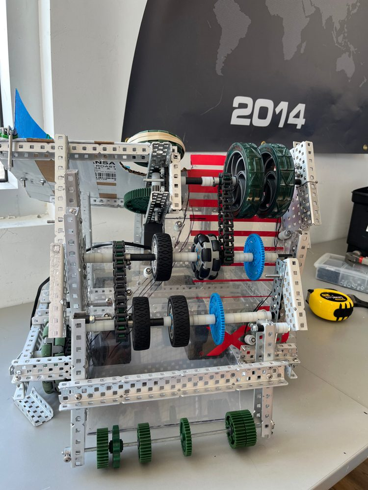
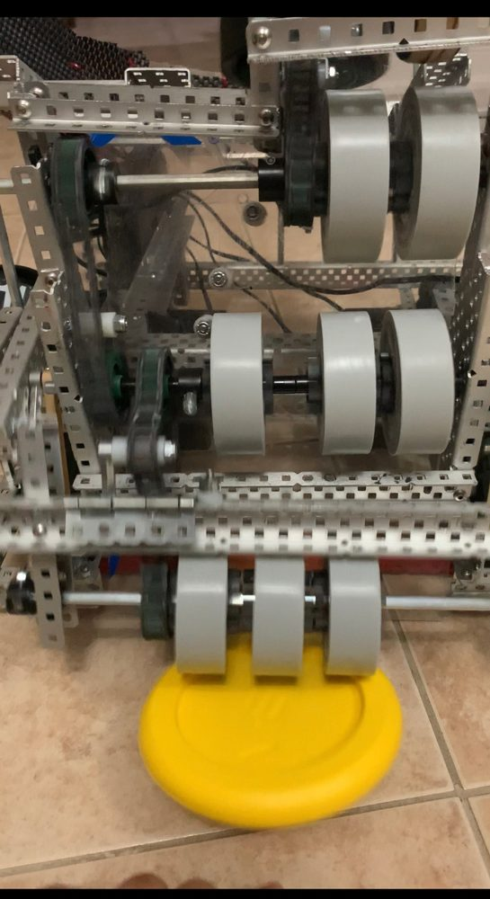
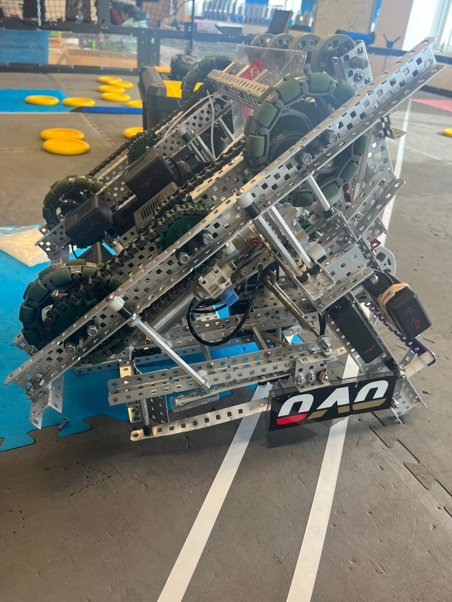
What went wrong
We were honest with ourselves in the notebook: the design had the right idea but poor execution.
- The drive chain kept loosening and losing spacing, so the drive wasn't smooth
- Extra screws and metal made the robot heavy
- Regular shafts would have snapped under load where we needed high-strength shafts
- We started subsystems and left them half finished instead of planning ahead
The rebuild
After the December event we ran a full SPICE review and set new requirements for the robot:
- A faster intake with less travel distance to the shooter
- A close-range shooter that fires three discs in under 3 seconds
- Rollers spread farther apart so they line up easily
- An expansion, using a motor if pneumatics weren't available
We based the new layout on a proven design from team 4082B and adapted parts to what we had. We modelled the drive in Autodesk Inventor before building.

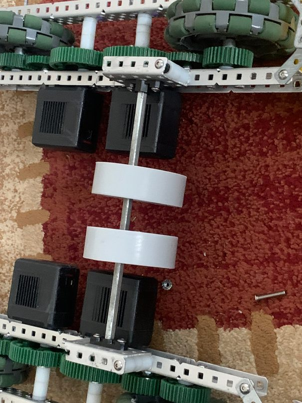
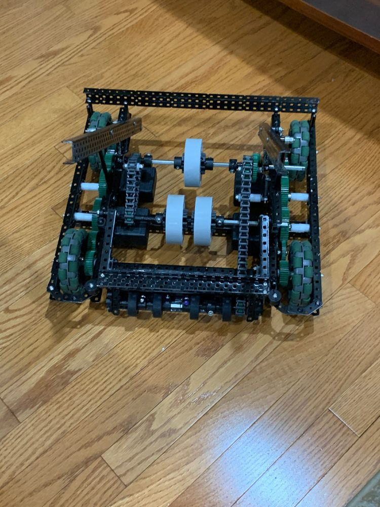
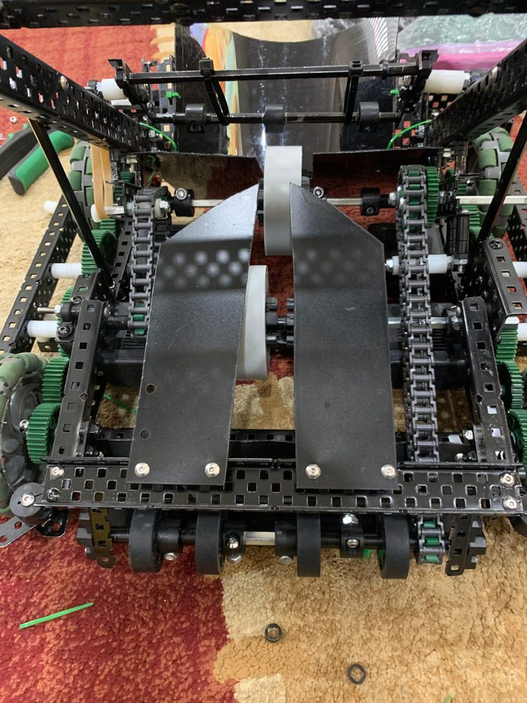
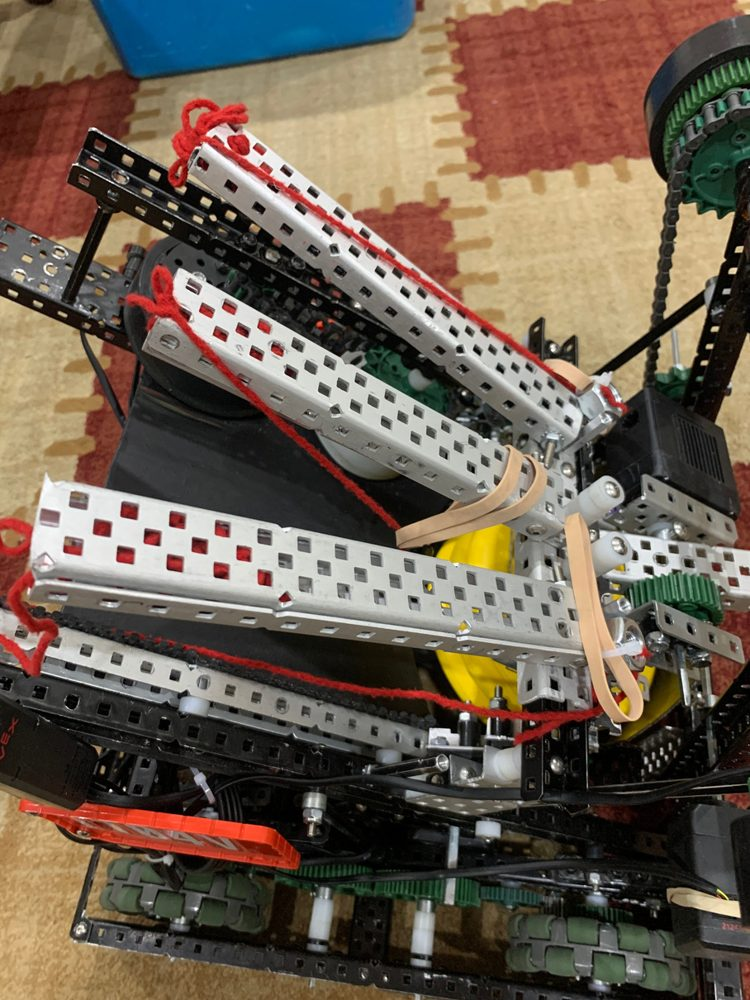
Design changes and why
| Subsystem | Before | After | Why |
|---|---|---|---|
| Shooter | Curved, one disc at a time | Straight flywheel with a motorized indexer | Fires 3 discs back to back |
| Intake | Long flex-wheel path | Short path into a 4-bar holder | Less travel time means more shots per match |
| Rollers | Fast, low torque | Higher sprocket ratio | Rollers were hard to turn without more torque |
| Expansion | None | Motorized, then pneumatic | Pneumatics gave more force and covered more tiles |
| Drive | 4-motor chain drive | 6-motor drive (4 omni + 2 traction) | More pushing power and speed (added before Provincials) |
Testing under pressure: February 18
Our own organization hosted the February 18 Disco competition. We went 4-2 in qualifiers, were picked for an alliance, and lost a close quarterfinal.
| Match | Blue | Red | 1104V |
|---|---|---|---|
| Qualifier 8 | 75 | 157 | Win |
| Qualifier 15 | 58 | 16 | Loss |
| Qualifier 29 | 39 | 142 | Loss |
| Qualifier 48 | 107 | 71 | Win |
| Qualifier 62 | 107 | 69 | Win |
| Qualifier 73 | 59 | 83 | Win |
| Round of 16 | 101 | 35 | Win |
| Quarterfinal | 156 | 97 | Loss |
Problems we found, and what we changed
| Problem | What happened | Fix |
|---|---|---|
| Loose cable | We unplugged a motor cable for judging and forgot to reconnect it, so the shooter didn't work for a match | More attention to detail and organization between matches |
| Inconsistent expansion | Added days before the event; the string had to be wrapped a complex way and sometimes didn't fire | Rebuilt as a reliable pneumatic expansion |
| Code errors | The expansion sometimes didn't trigger and the flywheel lost too much RPM between shots | Closed-loop flywheel speed control |
| Decision making | We expanded when we didn't need to, the string left the field, and we were disqualified | Better strategy calls with experience: we improved on when to expand and when to take rollers |
| Weak drive | The 4-motor chain drive had no pushing power and was easy to push around | Switched to a 6-motor drive |
Even with those problems, our driver skills score improved from 126 to 142, and we became much better at deciding when to take rollers and when not to expand.
Final robot
For Provincials and Worlds we rebuilt the drive with six motors: four omni wheels and two traction wheels, three per side. It took more practice to align shots, but it gave us far more pushing power and speed.
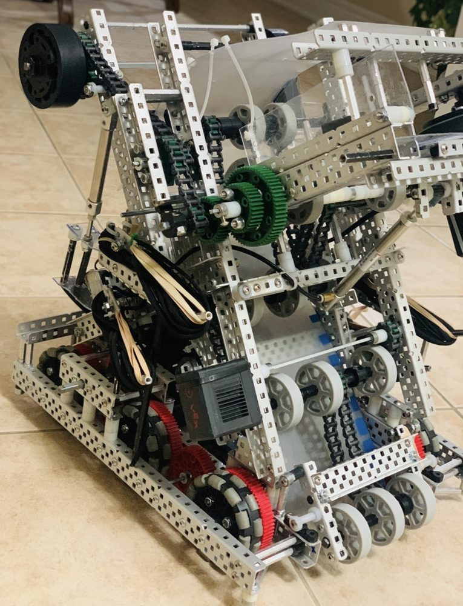
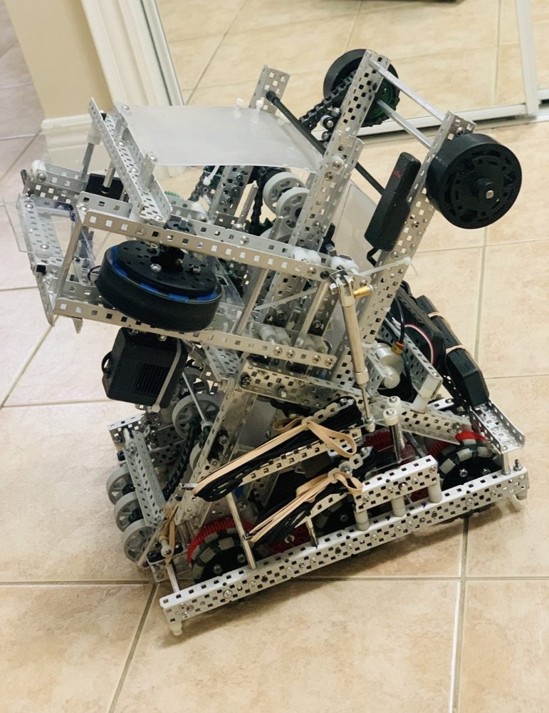

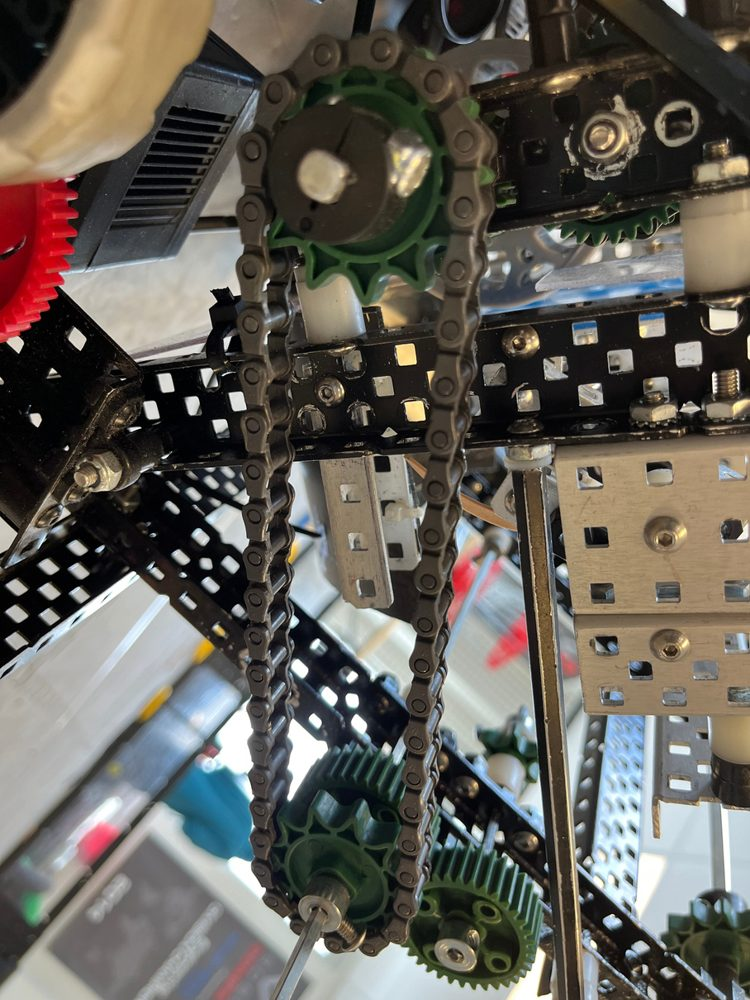
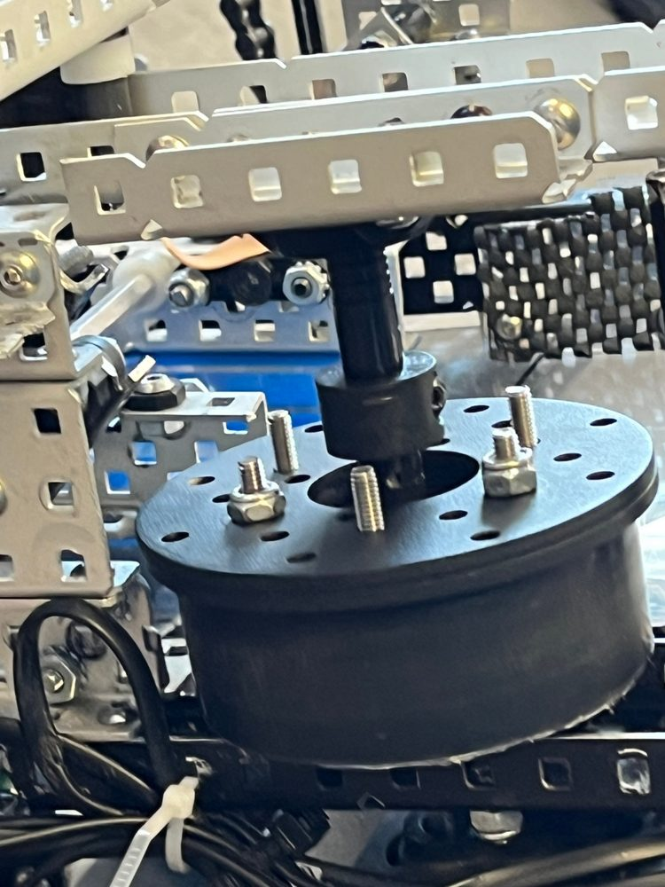


Programming
We programmed in C++, first in VEXcode and later in PROS. Most of the team was new to C++, so we learned it together with help from our mentors.
Driver control: arcade drive
We tried tank and arcade controls and chose arcade. The left stick's forward and turn values are mixed into a voltage for each side of the six-motor drive:
// joystick % (-100..100) x 120 = millivolts (-12000..12000) leftSpeed = (Controller.Axis3.position(percent) + Controller.Axis4.position(percent)) * 120; rightSpeed = (Controller.Axis3.position(percent) - Controller.Axis4.position(percent)) * 120; backLeft.spin(forward, leftSpeed, voltageUnits::mV); middleLeft.spin(forward, leftSpeed, voltageUnits::mV); frontLeft.spin(forward, leftSpeed, voltageUnits::mV); // ...same for the right side, then wait(20, msec) to free the CPU
Keeping the flywheel at speed
Every shot pulls energy out of the flywheel, so RPM drops and the next disc falls short. A fixed voltage wasn't good enough. We tested bang-bang and PI control, then worked on a take-back-half (TBH) velocity controller adapted from a well-known VEX Forum example. TBH raises motor power based on the speed error, and each time the error crosses zero it cuts power to halfway between the current value and the value at the last crossing. That way the flywheel settles at the target speed quickly without overshooting.
Autonomous
Our match autonomous was built to guarantee at least one roller (10 points) every time, then work toward two discs in the goal and the second roller for the Autonomous Win Point. We used motor encoders for distance and an inertial (gyro) sensor for accurate turns, and we were tuning a line tracker to stop at the autonomous line.
Skills strategy
In the 60-second skills run, rollers are worth 10 points and each high-goal disc is worth 5, so we planned a route that collects discs while taking rollers:
- Shoot the two preloads from a fixed start position
- Take the two nearest rollers while intaking 3 discs, then shoot them
- Intake and shoot two more sets of 3 discs
- Take the last two rollers with about 20 seconds left, picking up nearby discs on the way
- Shoot what's left and expand
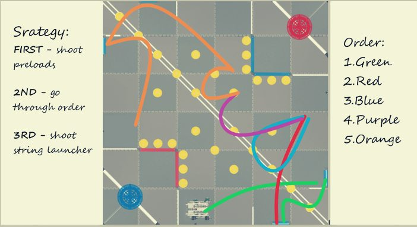
The plan was designed for at least 100 points, aiming for 120 to 130. At our first tournament we scored 52 points in programming skills.
Built to survive
At early events we saw other robots lose parts mid-match, so we designed for durability:
- Lock nuts on every joint: the rubber insert stops them from loosening under vibration
- Standoffs instead of C-channels in some places, since C-channels can bend and aluminum standoffs are stiff and light
- Extra bracing on each subsystem with beams and standoffs
- Secured motor screws so motors don't loosen, add friction and lose RPM
Outreach and teamwork
- Ran a Girl Powered event with a local library to make robotics and STEM more accessible
- Invited teams 3150A and 81208X to practise with us at our facility during the season
- Built a shared Google Sheet to scout other teams' autonomous routines and strengths for alliance selection

What I learned
- Fail early, then rebuild with data. Robot 1 was a mess, but writing down exactly why let us rebuild with clear requirements.
- Test the whole system, not just parts. Our expansion worked on the bench and failed in matches because it was added too late.
- Mechanical and software problems are linked. Flywheel RPM drop was fixed with both better mechanics and closed-loop control.
- Leadership is organization. Several losses came from process mistakes, like a loose cable, rather than bad engineering. Planning and attention to detail matter as much as the design.